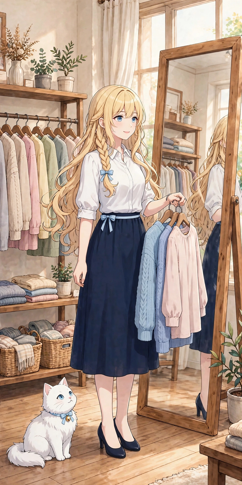

顔まわりが明るく見えるトップスの色の選び方（40代）

ルミ：黒やカーキばかりだと、顔が沈んで見えるにゃ。色は顔の横に当てて比べるにゃ。
この記事の商品（先に比較）
| 商品 | 価格（税込） | お店 |
|---|---|---|
| とろみシフォンのスキッパーブラウス | 3,190円 | ファッション通販サイトKMC |
| パール付きボウタイブラウス | 3,490円 | ファッション通販サイトKMC |
| とろみジョーゼットのハイネックブラウス | 3,490円 | ファッション通販サイトKMC |
| スカーフ衿のボウタイブラウス | 3,490円 | ファッション通販サイトKMC |
| 前タックのジョーゼットブラウス | 3,490円 | ファッション通販サイトKMC |
| 配色のバルキーニットプルオーバー | 2,590円 | ファッション通販サイトKMC |
| タートル＆ハイネックのリブニット | 1,890円 | ファッション通販サイトKMC |
| ランダムリブのハイネックニット | 1,494円 | ファッション通販サイトKMC |
| ケーブル編みのニットカーディガン | 1,995円 | ファッション通販サイトKMC |
| zootie リブカットソー（クルーネック） | 1,790円 | イーザッカマニアストアーズ |
| zootie リブカットソー（タートルネック） | 1,790円 | イーザッカマニアストアーズ |
価格は2026年11月26日に確認したものです。zootieのリブカットソー2点は、レビュー件数が3,383件と2,719件で、今回の11点の中で一番多く集まっています。セールやクーポンで変わることがあります。
目安1：顔の近くに明るい色を置く（白・オフホワイト・アイボリー）
顔まわりを明るく見せる一番の近道は、顔の近くに明るい色を置くことです。白やオフホワイト、アイボリーのトップスは、顔に光を返すように見えて、顔色が明るく見えやすくなります。今回の商品では、KMCのとろみシフォンのスキッパーブラウスが白・黒・ベージュの色展開で3,190円、レビュー57件・★4.05と、今回のブラウスの中で一番レビューが集まっています。同じKMCのパール付きボウタイブラウスと、スカーフ衿のボウタイブラウス、前タックのジョーゼットブラウスは、いずれも白があり3,490円です。ニットでは、zootieのリブカットソーがライトベージュで1,790円、レビュー3,383件・★4.47と、今回の11点の中で一番レビューが多く集まっています。白を選ぶときは、透けにくいかどうかも一緒に確認してください。パール付きボウタイブラウスは、少し厚めのシフォンで透けにくいと説明され、スカーフ衿のボウタイブラウスは裏地付きで透けにくいと説明されています。白のトップスは、インナーの色も見え方に響きます。白のブラウスの下には、ベージュや白のインナーを合わせると、ラインが出にくくなります。
目安2：くすみを拾わない色を選ぶ（水色・淡いピンク・ベージュ）
白だけが顔まわりを明るく見せる色ではありません。水色や淡いピンク、ベージュも、顔の近くに置くと明るく見えやすくなります。zootieのリブカットソーは、ライトベージュのほかに、グレイッシュブルー（くすんだグレーみのあるスモーキーブルー）とブラッシュピーチ（黄みのあるピンク）の色展開があり、クルーネックとタートルネックの2型があります。どちらも1,790円で、タートルネックはレビュー2,719件・★4.45です。KMCのランダムリブのハイネックニットは、ホワイト・イエロー・ピンクの色展開で1,494円、洗濯機で洗えるタイプです。バルキーニットのプルオーバーはベージュで2,590円、配色と裾のアシメデザインが目を惹く形です。色を選ぶときは、顔の横に当てて鏡で見るのが一番確実です。商品写真の色と、実際に届いた色が違って見えることもあるので、色の名前だけで決めず、顔の横に当てて比べる習慣をつけてください。くすんだ色や、顔色とけんかする強い色は、顔の近くには置かず、ボトムスやバッグで使うのがおすすめです。
目安3：首元の形と色の組み合わせ（ハイネック・ボウタイ・Vネック）
色だけでなく、首元の形も顔まわりの見え方に響きます。ハイネックやタートルネックは、首元まで色が届くので、明るい色を選ぶと顔まわりがまとまって見えやすくなります。KMCのとろみジョーゼットのハイネックブラウスは、白と黒の色展開で3,490円、レビュー44件・★3.91、プチハイネックとバルーン袖の形です。タートルとハイネックが選べるリブニットは1,890円で、白と黒の色展開、軽くて暖かく着膨れしにくいと説明されています。ボウタイやスカーフ衿は、首元に布が重なるので、白やベージュの明るい色を選ぶと、顔まわりが華やかに見えやすくなります。パール付きボウタイブラウスは、取り外し可能なパール付きボウタイで、スカーフ衿のボウタイブラウスはチャームが取り外しできます。Vネックのスキッパーブラウスは、首元が少し開くので、顔まわりがすっきり見えやすくなります。首元が詰まりすぎると顔が暗く見えることがあるので、ハイネックを選ぶときは、顔の横に当てて、首元の高さが顔に合っているか確認してください。
あえて推さないもの
- 顔の近くに濃い色ばかり置くこと（黒やカーキのトップス1枚だと、顔が沈んで見えやすくなります）
- くすんだ色のトップスを顔の近くに置くこと（顔色とけんかして、疲れて見えることがあります）
- 透ける白の薄手のブラウス（インナーのラインが出て、きちんと見えにくくなります。裏地付きか、少し厚めのものを選んでください）
- 首元が詰まりすぎるハイネック（顔が暗く見えることがあります。顔の横に当てて確認してください）
- 色の名前だけで決めること（商品写真と実際の色が違って見えることがあります）
色の合わせ方（ボトムス・羽織りとの組み合わせ）
明るい色のトップスは、ボトムスや羽織りとの組み合わせで印象が決まります。白やアイボリーのトップスには、紺や黒のボトムスを合わせると、明るい色が引き立ちます。デニムと合わせるなら、濃い色のデニムより、少し明るめのブルーの方が、全体が軽く見えやすくなります。羽織りものは、トップスの色とけんかしない、紺・ベージュ・グレーの無地が合わせやすいです。今回の商品では、ケーブル編みのニットカーディガンがブラック・ブラウン・アイボリーの色展開で1,995円、アイボリーを選ぶと、羽織りとしても顔まわりを明るく見せやすくなります。全身を明るい色でまとめると、ぼんやり見えることがあるので、ボトムスかバッグのどちらか1点を濃い色にすると、全体が引き締まります。色の組み合わせに迷ったら、白のトップスに紺のボトムス、ベージュの羽織りという、明るい色1点＋濃い色1点＋中間の色1点の組み合わせから始めてみてください。
試着と照明のチェック（店内と自然光）
色は、照明によって見え方が大きく変わります。店内の照明ではきれいに見えた白が、自然光では黄みがかって見えることもあります。試着するときは、店内の鏡だけでなく、窓際の自然光でも確認するのがおすすめです。通販で買う場合は、届いたらまず顔の横に当てて、自然光の入る場所で鏡を見てください。写真を撮って確認するのもおすすめです。スマートフォンで顔まわりを撮ると、自分では気づきにくい色の合い方がよく分かります。写真を撮るときは、普段どおりのメイクと髪型で撮ってください。色の合い方は、メイクや髪の色によっても変わります。白が似合うと感じたら、オフホワイトやアイボリーも試してみてください。白より少しだけやさしい色の方が、顔になじむこともあります。
お手入れ（白の黄ばみ・色移り対策）
白や淡い色のトップスは、お手入れの仕方で長持ちが変わります。白は、色の濃いものと分けて洗ってください。一緒に洗うと、色移りで白がくすんでしまいます。洗濯機で洗えるものは、ネットに入れて洗うと、型崩れを防げます。今回の商品では、ランダムリブのハイネックニットが洗濯機で洗えるタイプです。ニットは、干すときにハンガーにかけると、重みで伸びてしまうことがあるので、平干しするのが基本です。黄ばみが気になるときは、漂白剤の表示を確認してから使ってください。色柄ものに使えない漂白剤もあるので、洗濯表示をよく見てください。シーズンの終わりに洗ってからしまうと、次のシーズンも気持ちよく使えます。白のブラウスは、着たあとに汗をそのままにせず、早めに洗うと、黄ばみがつきにくくなります。
この記事の目安に合う商品
特徴：顔まわりを明るく見せる色のトップス11点。白のブラウス5点、ニット4点、リブカットソー2点。価格は2026年11月26日に確認したものです。


zootie リブカットソー（クルーネック）
ライトベージュ・グレイッシュブルー・ブラッシュピーチなど顔まわりを明るく見せる色展開あり
★4.47（レビュー3,383件）
1,790円（税込）
イーザッカマニアストアーズ

zootie リブカットソー（タートルネック）
ライトベージュ・グレイッシュブルー・ブラッシュピーチなど顔まわりを明るく見せる色展開あり
★4.45（レビュー2,719件）
1,790円（税込）
イーザッカマニアストアーズ
あわせて読みたい：トップス種類別ガイド／二の腕カバーの半袖ブラウスの選び方／写真のポージング
NEXT — 次に読むぽっこりお腹カバー ワンピースの選び方（40代）